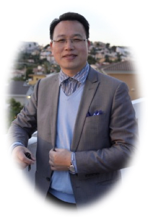
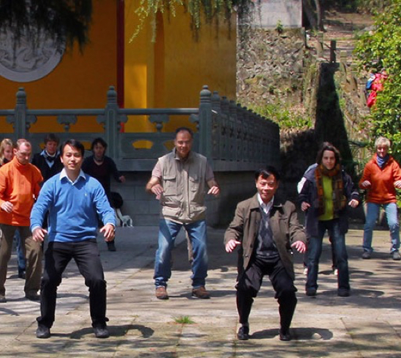
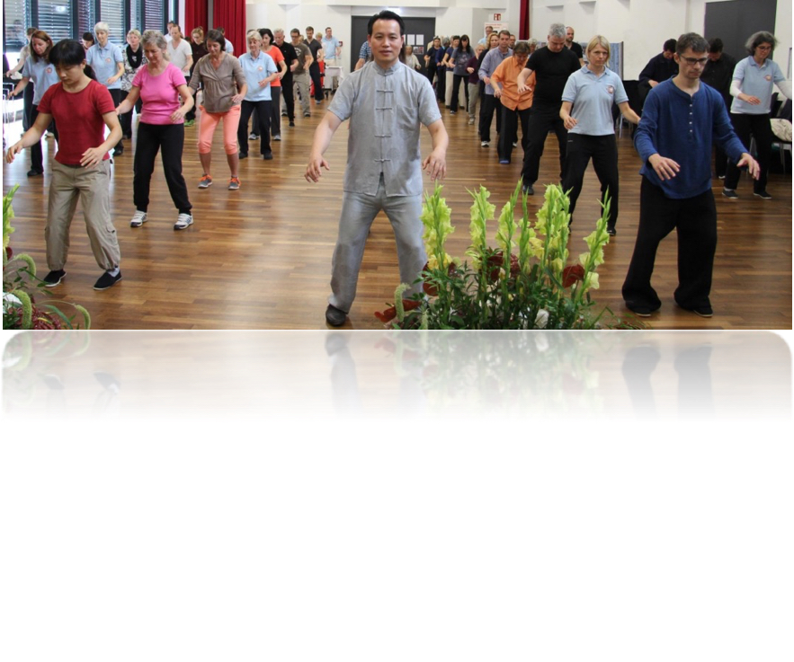
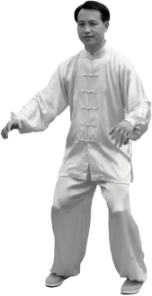

郑博音大师是少林内劲一指禅的第二十代传人。他出生于中医武术世家，自幼学习中医、医学气功、太极和传统武术，并师承阙阿水大师的嫡传大弟子姚金圣先生，潜心修炼三十余年。自1999年移居德国后，郑大师创立了“国际内劲气功康复养生学院”，并设有三所专业诊疗与康复中心。他致力于传播身心健康之道，凭借深厚的功力帮助全球数万人重获健康，同时培养了众多优秀的气功导师和康复治疗师。

少林内劲一指禅是一套传承超过1500年的佛门上乘功法，起源于福建南少林。第十八代传人阙阿水大师于二十世纪六十年代初将此秘法公诸于世。

该功法体系主要包括静功（站桩、坐桩、卧桩）、动功（包括脊柱养生功）和静动功（罗汉神功/禅舞），以及手印（含扳指）、冥想和音诀。它还包含一指禅气功医学，用于诊断、治疗、外气发放、一指禅推拿和意念治疗。

安全自然
无需意守，不必入静，随其自然
简单易学
一桩一势，次第清晰，易学易练
适合不同根基与年龄习练者
功效明显
快速打通气脉，提升阳气
激发自愈潜能，增强免疫
安神定志化解焦虑抑郁

官方网站: https://neijin-qigong.com
教学视频: https://www.youtube.com/@NeijinQigong
课程信息：https://filedn.com/lTh0v2Bogc301OgoFen42cL/
联系我们：
Email: neijin.yzc@gmail.com
微信扫码